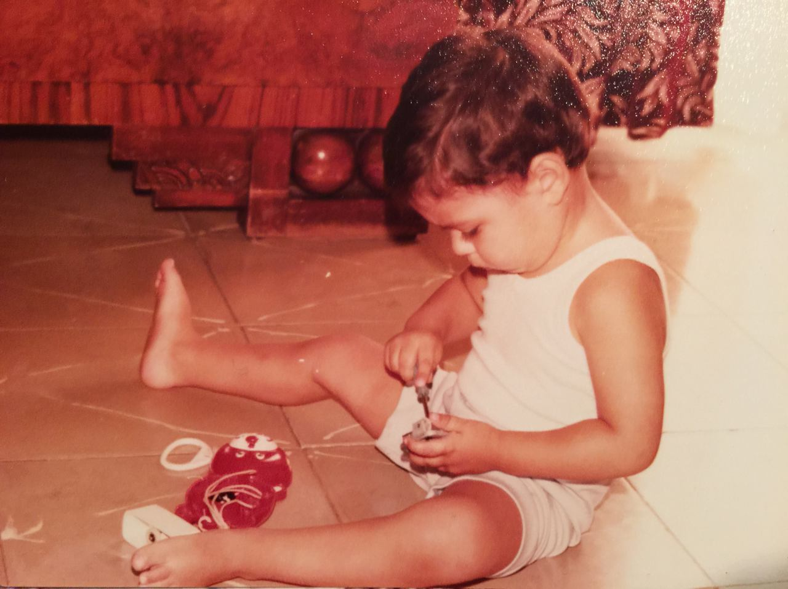
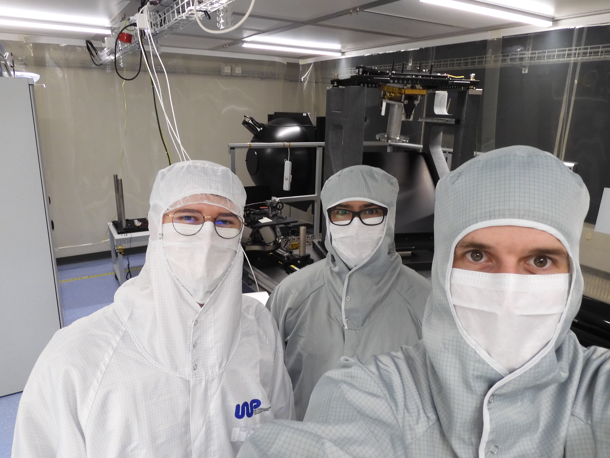

About Me

How It Started...

...How It's Going
I'm an optical engineer driven by hard problems—the kind where the answer isn't in a textbook and the path forward requires equal parts physics intuition and hands-on persistence. Currently, I lead the optical Assembly, Integration, and Verification (AIV) for the Comet Camera (CoCa) on ESA's Comet Interceptor mission. Our goal is to capture images of a 'pristine' comet, one that is entering the inner solar system for the very first time.
My path into precision optomechanics wasn't linear. To be honest, I struggled through middle school, my BSc, and my MSc. For a long time, the traditional academic path didn't click. But then came my PhD and Postdoc, and everything changed. I realized I didn't have a problem with learning; I had a hunger for complexity. I found that I excel when the stakes are high and the systems are intricate.
At the Max Planck Institute for Gravitational Physics, I spent six years pushing interferometer stability to world-record levels: sub-picometer precision below 1 millihertz. Working on LISA technology taught me that the frontier of measurement is where science gets most interesting...and most demanding.
"I love technical problems. To be honest: I’m not driven by the mystery of gravitational waves or the search for life on other planets—I’m driven by the challenge of building the instruments capable of detecting them. For me, the thrill isn't in the 'what,' it's in the 'how."
My current technical interests span several interconnected areas:
I'm based in Bern, but my journey has taken me from my hometown in Spain through the UK, France, Singapore, Sweden, Germany and now, Switzerland. To be honest, when I'm not in the lab, you won't find me climbing every peak in the Alps; you’ll find me at home playing with my son or getting into a video game. It might sound simple, but as any engineer knows, between 0 and 1, there are infinite numbers.
Background
2023
Leibniz Universität Hannover
Thesis: Advancements in Optical Readout Technologies — Test Mass Sensing and Laser-Frequency Stabilization for Optical Compact Interferometry
2013
Luleå University of Technology, Sweden
Thesis: Inertial Electrostatic Confinement Devices as an Advanced Electric Propulsion System
2012
Université Paul Sabatier – Toulouse III
2010
University of Balearic Islands, Spain